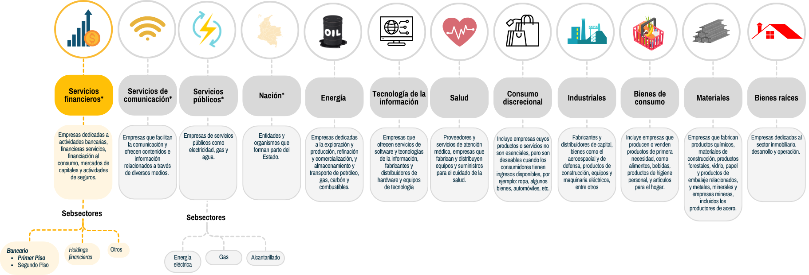
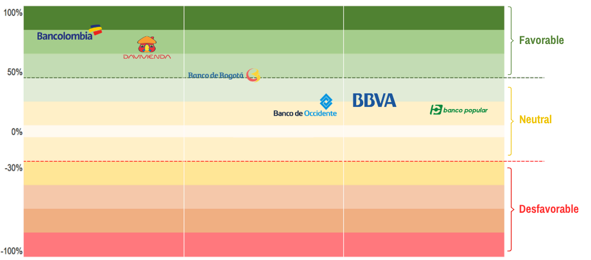
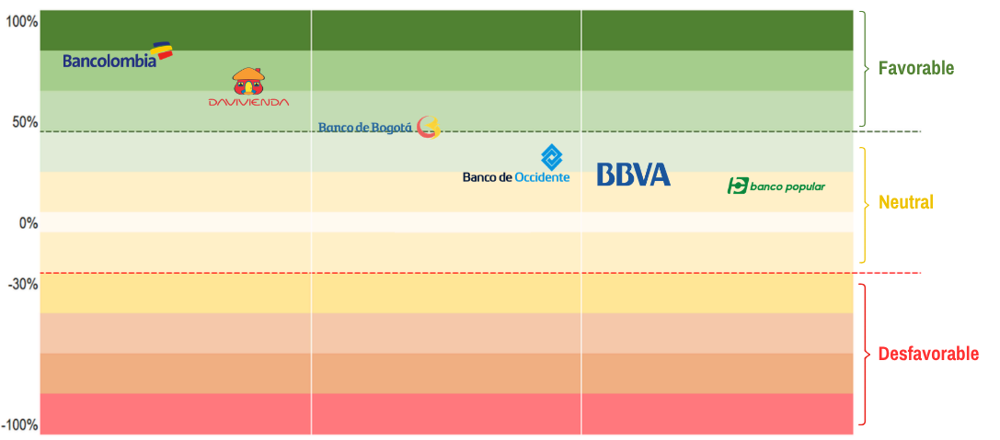
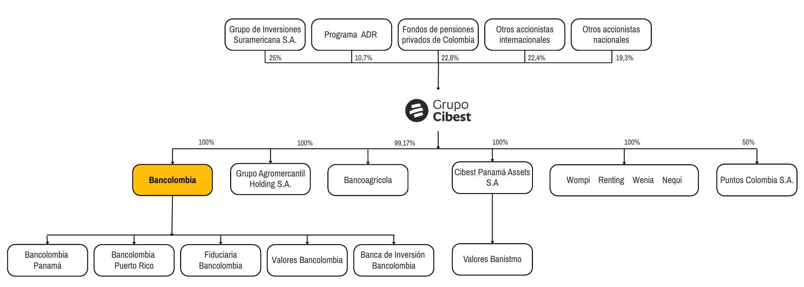
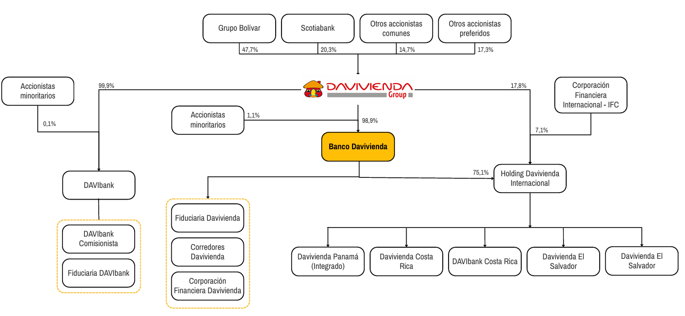
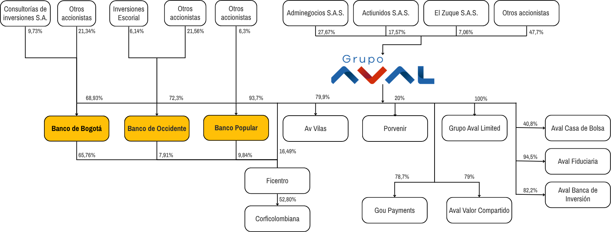
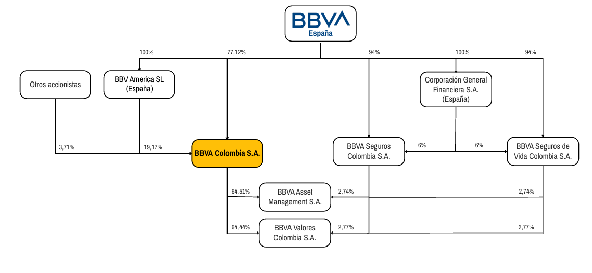

Análisis financiero de los emisores del sector financiero (bancos de primer piso) del portafolio
Corte 30 de junio de 2026
Introducción
Alcance del documento
El presente documento se presenta en cumplimiento de las responsabilidades del Comité de Riesgos Financieros, área Middle Office y el Gestor de Riesgos Financieros según lo establecido en el Manual de Inversiones y los lineamientos específicos para la Gestión de Inversiones y Riesgos Financieros.
Este documento tiene como alcance el análisis financiero y de riesgos de los emisores pertenecientes al subsector bancario de primer piso, con base en los Estados de Situación Financiera y los Estados de Resultado con corte a junio de 2026, así como la información disponible y el seguimiento realizado por el área de Middle Office hasta la fecha de entrega del informe.
Para efectos de comparación, el Estado de Situación Financiera se compara con la información correspondiente a diciembre de 2025, mientras que el Estado de Resultados se compara con el corte de junio de 2025.
En el siguiente esquema se presenta la clasificación de los sectores económicos.
Ilustración 1. Esquema de clasificación de los sectores económicos.

Fuente: elaboración propia. Nota: los sectores marcados con un * al final corresponden a aquellos en los que hay exposición en el portafolio actualmente.
A continuación, se detalla el análisis del sector financiero, con especial énfasis en los emisores del subsector bancario de primer piso.
02 · Nota metodológica
Nota metodológica
El análisis financiero de los emisores se realiza desde una perspectiva de riesgo de crédito, fundamentada en la evaluación de los riesgos asociados tanto al sector como a cada emisor en particular. El objetivo es identificar la percepción del emisor frente a la capacidad de asumir sus obligaciones financieras. En este sentido, las escalas utilizadas en el concepto del área del Middle Office representan:
Favorable
Cuando el desempeño del emisor es positivo y evidencia un fortalecimiento en los indicadores analizados (rentabilidad, liquidez, endeudamiento, solvencia y/o actividad), ya sea frente a su desempeño histórico o en comparación con sus pares. Así mismo, los factores de riesgo analizados en el sector o en el emisor, se consideran a la baja.
Neutral
Cuando el desempeño del emisor se mantiene estable, sin mostrar señales claras de fortalecimiento ni de deterioro significativo en los indicadores analizados, ya sea frente a su desempeño histórico o en comparación con sus pares. Así mismo, los factores de riesgo analizados en el sector o en el emisor se consideran estables.
Desfavorable
Cuando el desempeño del emisor es negativo y refleja un deterioro en los indicadores analizados, ya sea frente a su desempeño histórico o en comparación con sus pares. Así mismo, los factores de riesgo analizados en el sector o en el emisor se consideran al alza.
El concepto del área del Middle Office pretende alcanzar los más altos estándares de calidad en términos de fuentes de información y análisis. Su alcance es el de proporcionar un insumo técnico para la toma de decisiones por el área del Front Office y no constituye ninguna restricción de inversión o un concepto de desinversión.
02 · Nota metodológica · matices del concepto
Nota metodológica
El concepto emitido por el área del Middle Office se clasifica en las categorías Favorable, Neutral o Desfavorable, sin embargo, el desempeño financiero de los emisores puede presentar matices. En este sentido, un emisor que se ubica dentro de la categoría Neutral puede evidenciar sesgos o señales tempranas que lo aproximan a un escenario más favorable o, alternativamente, a un escenario neutral con inclinación desfavorable.
Este enfoque permite evidenciar la dinámica del desempeño financiero de los emisores, sin modificar la clasificación general del concepto emitido por el área. A continuación, se presenta la Tabla 1, en la cual se resumen los conceptos del área frente a los indicadores clave analizados, así como la Ilustración 2, que muestra el mapa de calor que refleja el desempeño financiero de los bancos de primer piso analizados junto con la evaluación de los indicadores clave.
Tabla 1 · Resumen del concepto del área del Middle Office frente al desempeño del emisor en los indicadores clave revisados
Emisor
Concepto
Bancolombia
Favorable
Davivienda
Favorable
Banco de Bogotá
Favorable
Banco de Occidente
Neutral
Banco BBVA
Neutral
Banco Popular
Neutral
Ilustración 2. Mapa de calor que refleja el desempeño financiero de los bancos analizados.


Fuente: elaboración propia.
03 · Subsector
Análisis del subsector bancario de primer piso
Perspectiva del subsector
Desfavorable
Neutral
Favorable
En 2026, el sector continúa mostrando un comportamiento resiliente, evidenciado en un crecimiento anual del 4,3% en la actividad sectorial durante el 2T2026 por encima del 2,8% del 1T2026, lo que refleja un entorno aún favorable de cara al 2S2026. Este resultado se presenta en un contexto en el que las tasas de interés permanecen en niveles elevados, mientras que la actividad económica continúa manteniendo un crecimiento limitado.
En este contexto, el sector comienza a mostrar señales de menor dinamismo en la colocación de crédito, lo que podría moderar su ritmo de crecimiento. Asimismo, se espera un leve deterioro en la calidad de cartera, que podría generar mayores presiones sobre el gasto por provisiones y la rentabilidad de los bancos. De igual manera, el deterioro fiscal y la incertidumbre regulatoria podrían presionar los costos de fondeo y la capacidad de crecimiento de los bancos. Mientras que, los riesgos asociados al terremoto podrían afectar la dinámica de algunos sectores económicos y la capacidad de pago de los deudores, generando presiones adicionales sobre la calidad de cartera y la dinámica de colocaciones. A continuación, se presentan los principales aspectos a resaltar y factores de riesgos que enfrentarían los bancos de primer piso:
Solvencia total prom.
17,16%
Mínimo regulatorio 9%
IRL promedio
323,8%
Mínimo regulatorio 100%
CFEN promedio
116,97%
Mínimo regulatorio 100%
ICV del sector (jun 2026)
3,80%
vs. 4,38% en jun 2025
Cartera bruta · real anual (jun 2026)
+2,8%
vs. +3,1% en mayo
Bancos con pérdidas netas
4 → 3
feb 2026 → jun 2026
A junio de 2026, el indicador regulatorio de solvencia (mín. 9%) y los indicadores regulatorios de liquidez (mín. 100% para IRL y CFEN) se mantienen por encima de los mínimos exigidos:
Solvencia total promedio: 17,16%.
Indicador de riesgo de liquidez (IRL) promedio: 323,8%.
Coeficiente de Fondeo Estable Neto (CFEN) promedio: 116,97%.
Con el nuevo Gobierno, se esperan mejores perspectivas en materia tributaria para el sector, con medidas propuestas como la reducción o eliminación del impuesto al patrimonio.
Cartera:
A junio de 2026, la cartera bruta creció 2,8% real anual, inferior al 3,1% registrado en mayo. Esta expansión estuvo impulsada por microcrédito (+11,7%), vivienda (+5,1%) y consumo (+3,7%), mientras que, comercial se desaceleró en un 0,9%, afectado por las caídas en construcción (-8,8%) y Pymes (-5,9%) (Corficolombiana, 2026).
El indicador cartera vencida (ICV) mejoró de 4,38% a 3,80% entre junio 2025 y junio 2026 (Corficolombiana, 2026).
Reducción del número de bancos con pérdidas netas, que pasó de 4 en febrero de 2026 a 3 al cierre de junio de 2026.
Condiciones macroeconómicas más restrictivas: una tasa de interés elevada por más tiempo, una inflación persistentemente alta y una menor dinámica de la actividad económica podrían limitar el crecimiento de la cartera de créditos, mantener presiones sobre la calidad de la cartera e incrementar el costo de fondeo, lo que en conjunto podría generar presiones sobre el margen financiero y limitar la rentabilidad del sector.
Riesgos asociados al terremoto: como consecuencia del terremoto ocurrido el 10 de agosto de 2026, la SFC expidió la Circular Externa 007 del 26 de agosto de 2026, que estableció medidas orientadas a mitigar el impacto del desastre sobre los consumidores financieros afectados, incluyendo refinanciaciones, períodos de gracia, condiciones especiales de crédito y mantenimiento temporal de la calificación crediticia. En este contexto, los principales riesgos identificados son:
Deterioro crediticio: los alivios a los deudores podrían retrasar el reconocimiento contable del deterioro de la cartera, trasladando hacia periodos posteriores el registro de mayores gastos por provisiones y las presiones sobre la rentabilidad.
Menor generación y recuperación de ingresos: los períodos de gracia y las refinanciaciones podrían diferir el cobro de capital e intereses, mientras que una menor capacidad de pago de los deudores podría reducir la recuperación de cartera y los ingresos por intereses, presionando el margen financiero.
Presión sobre el margen financiero: las tasas preferenciales para créditos de vivienda (8%), consumo (10%) y microcrédito (10%) podrían reducir el rendimiento de estas colocaciones y presionar el margen financiero.
Afectaciones al segmento hipotecario: el terremoto podría afectar la capacidad de pago de los deudores y deteriorar el valor de las garantías. Si bien parte de estas pérdidas podría ser cubierta por las aseguradoras, mientras no se materialicen las indemnizaciones persiste la exposición de los bancos al deterioro de la cartera y a una menor recuperación de los créditos.
Riesgo para el sector asegurador: el terremoto podría presionar la siniestralidad, liquidez y reservas técnicas de las aseguradoras. Al 7 de septiembre de 2026 se habían reportado 68.270 reclamaciones, de las cuales solo el 2,6% había sido pagado, lo que evidencia posibles presiones sobre la gestión de las indemnizaciones. Este efecto adquiere relevancia para los grupos financieros con participación en aseguradoras, dado que un deterioro en sus resultados podría trasladarse al desempeño y rentabilidad consolidada del grupo (Fasecolda, 2026).
Incertidumbre política y fiscal: la posición fiscal del Gobierno podría verse presionada por propuestas como la eliminación del 4x1000, ante la incertidumbre sobre fuentes alternativas de recaudo, así como por los costos de reconstrucción asociados al terremoto, estimados entre 1% y 2% del PIB. Estos factores podrían aumentar el déficit fiscal y, con ello, la prima de riesgo y las tasas de interés, elevando los costos de fondeo y presionando la rentabilidad de las entidades financieras (Bloomberg, 2026).
Moderación de la actividad crediticia en segmentos particulares: aunque se espera un mayor crecimiento de la cartera de vivienda por las necesidades de reconstrucción asociadas al terremoto, otros segmentos continúan presionados por condiciones macroeconómicas restrictivas. Esto se evidencia en una contracción anual del 4,4% en los desembolsos al cierre del 2T2026, en línea con el aumento de las tasas de colocación, que pasaron de 16,2% en junio de 2025 a 18,5% en junio de 2026 (Bancolombia, 2026).
Fragilidad del sector construcción: aunque la reconstrucción de las zonas afectadas por el terremoto y la posible reactivación de los subsidios de vivienda podrían favorecer al sector construcción, esto se presenta en un contexto de debilidad sectorial. Al 1S2026, la actividad se contrajo un 1,5% anual, las ventas de vivienda nueva disminuyeron 8,7% y las iniciaciones retrocedieron 18,7%. En este contexto, se podría moderar la generación de nuevos proyectos y el crecimiento de las carteras de crédito de construcción y vivienda, así como también empeorar la capacidad de pago de las empresas del sector, lo que elevaría el riesgo de deterioro de las carteras asociadas (Bancolombia, 2026).
Incremento en el riesgo de mercado por mayor exposición a deuda pública: a junio de 2026, los Establecimientos de Crédito (EC) incrementaron su posicionamiento en TES en un 29,2% anual, evidenciando una mayor exposición a deuda pública, lo que generaría una mayor sensibilidad de los portafolios a las variaciones en las tasas de interés. Esta exposición adquiere mayor relevancia en un contexto de incertidumbre fiscal, en el que un aumento de la prima de riesgo del país podría generar desvalorizaciones de los títulos, con impacto sobre los resultados y el patrimonio de las entidades (Corficolombiana, 2026).
Riesgos asociados a nuevas regulaciones: el Decreto 0368 de 2026 estableció la implementación obligatoria de las finanzas abiertas (Open Finance) a partir de 2027, permitiendo, con autorización del usuario, el intercambio estandarizado de información financiera entre entidades y terceros autorizados. Si bien el esquema podría favorecer las sinergias entre entidades, su implementación generaría costos de adaptación de los sistemas y una mayor exposición a riesgos tecnológicos y de ciberseguridad. La materialización de estos riesgos podría generar costos de recuperación, afectaciones reputacionales y presiones sobre la rentabilidad.
Para el presente documento, se analizan los siguientes emisores, con corte a junio de 2026: Bancolombia, Davivienda, Banco de Bogotá, Banco de Occidente, BBVA Colombia y Banco Popular.
04 · Concepto del área del Middle Office
Concepto del área del Middle Office
FavorableNeutralDesfavorable
A continuación, para cada emisor se presentan los indicadores clasificados bajo las categorías rentabilidad, liquidez, solvencia, actividad y endeudamiento. El color define el concepto del Middle Office para el indicador: rojo (desfavorable), amarillo (neutral) y verde (favorable).
Bancolombia
Favorable
Ubicación del emisor en el mapa de calor
Rentabilidad
ROAROE
Liquidez
IRLCFEN
Solvencia
Solvencia
Actividad
ICV
Endeudamiento
Endeudamiento
Bancolombia continúa posicionándose como líder de la industria bancaria en Colombia, ocupando el primer puesto en el ranking de utilidades de los bancos y respaldado por el fortalecimiento de su participación de mercado (27,8%) (BRC Ratings, 2026). Al cierre del 1S2026, se registró un crecimiento del 23,08% en la utilidad neta, impulsado principalmente por la expansión del margen financiero neto después de deterioros (+22,77%), lo que se reflejó en mejoras del ROE (+1,5%) y ROA (+0,22%) frente al 1S2025. En materia de cartera, se presentó una leve mejora en la calidad crediticia, con un ICV que pasó del 3,44% al cierre de 2025 a 3,36% en junio de 2026, mientras que, el crecimiento de la cartera (+3,91%) fue menor al registrado por algunos de sus pares. Por su parte, la posición de liquidez y estabilidad del fondeo se mantuvo favorable, con niveles de IRL (164%) y CFEN (121%) superiores a los mínimos regulatorios (100%). Mientras tanto, la solvencia básica (12,06%) y total (13,09%) permanecen por encima de los mínimos exigidos (7% y 11,5%), sin embargo, la solvencia total mantiene una holgura limitada (1,59%) frente al mínimo exigible, particularmente relevante dada la importancia sistémica y la escala de negocio del emisor. Esta menor holgura podría recuperarse gradualmente si se mantienen niveles estables de generación de utilidades y fortalecimiento patrimonial vía utilidades retenidas. El apalancamiento (90,8%) creció en un 0,05%, reflejando una mayor utilización de recursos de terceros frente al patrimonio. Finalmente, la escisión de Nequi representa un riesgo prospectivo sobre el costo de fondeo y la generación de utilidades, asociado a la pérdida de una fuente de fondeo transaccional de bajo costo y de los resultados vinculados a esta línea de negocio.
Davivienda
Favorable
Ubicación del emisor en el mapa de calor
Rentabilidad
ROAROE
Liquidez
IRLCFEN
Solvencia
Solvencia
Actividad
ICV
Endeudamiento
Endeudamiento
Davivienda continuó consolidándose como el segundo banco más grande de Colombia, con una participación de mercado por activos de aproximadamente 14% (BRC Ratings, 2026). En el 1S2026, la utilidad neta mostró un crecimiento del 74,27% con respecto al 1S2025, explicado por la expansión del margen financiero neto (+54,18%), lo que permitió que el ROA y el ROE se incrementaran 0,55% y 6,5%, respectivamente. En línea con este mejor desempeño, la cartera mostró resiliencia, creciendo un 5,57% con respecto al cierre de 2025. Adicionalmente, el emisor presenta una posición de capital destacable, al registrar la relación de solvencia total (18,5%) más alta y la segunda mejor relación de solvencia básica (12,7%) entre los emisores analizados. En términos de liquidez y fondeo, el emisor continúa mostrando niveles de IRL (150%) y CFEN (113%) por encima del límite regulatorio (100%). Por otro lado, se registró un leve deterioro en la calidad de la cartera, evidenciado por el incremento del 0,04% en el ICV, lo que ubica al emisor con el nivel más alto entre los analizados. En materia de apalancamiento (90,3%), el emisor se encuentra por debajo del promedio de sus pares con un leve incremento de 0,1%. Mientras tanto, la integración con Scotiabank implicó cambios en la estructura de control accionario del emisor, situación que podría representar retos en materia de gobierno corporativo, alineación estratégica y sobrecostos en la integración. Por último, la operación entre Davivienda y Davibank podría generar presiones sobre el ICV y debido a la cesión de parte de su participación en la Holding Davivienda Internacional se reduciría la diversificación geográfica del emisor y los ingresos provenientes de esta filial.
Banco de Bogotá
Favorable
Ubicación del emisor en el mapa de calor
Rentabilidad
ROAROE
Liquidez
IRLCFEN
Solvencia
Solvencia
Actividad
ICV
Endeudamiento
Endeudamiento
Banco de Bogotá continúa siendo una filial estratégica para Grupo Aval por su importante aporte económico y sólida posición de negocio (BRC, 2026). A junio de 2026, el emisor ocupó el cuarto puesto en el ranking de utilidades del sector bancario colombiano, presentando un incremento del 15,57% en la utilidad neta con respecto al 1S2025. Este resultado impulsó el crecimiento del ROE y el ROA de 2,6% y 0,22% respectivamente. Adicionalmente, la cartera se expandió 4,19% con respecto al cierre de 2025, dinámica que podría fortalecerse con la incorporación de la cartera retail adquirida a Itaú para el 2S2026. No obstante, esta operación también podría generar presiones sobre la calidad de la cartera, considerando que a junio de 2026 el ICV aumentó de 3,85% a 3,99%, deterioro que podría acentuarse en un entorno de mayores tasas de interés y presiones en la capacidad de pago de los deudores tras el sismo. En términos de liquidez y estabilidad del fondeo, el IRL y CFEN se ubicaron en 126% y 105%, ambos por encima del mínimo regulatorio (100%). Por otra parte, en el marco de la reestructuración de Corficolombiana, el emisor registró caídas del 2,4% y 3,4% en los indicadores de solvencia básica (13,6%) y solvencia total (14,7%), respectivamente, asociadas a la reducción del capital regulatorio derivada de la reestructuración. Lo anterior, reduce la holgura del banco para respaldar sus activos ponderados por nivel de riesgo, sin embargo, cabe aclarar que ambos indicadores de solvencia se mantienen por encima de los mínimos regulatorios y los colchones asociados a entidades de importancia sistémica. Finalmente, el emisor cuenta con el nivel más bajo de apalancamiento (89,9%) entre sus pares analizados.
Banco de Occidente
Neutral
Ubicación del emisor en el mapa de calor
Rentabilidad
ROAROE
Liquidez
IRLCFEN
Solvencia
Solvencia
Actividad
ICV
Endeudamiento
Endeudamiento
Banco de Occidente ocupa el séptimo puesto en el ranking de utilidades entre las entidades vigiladas por la SFC. En el 1S2026, el emisor ha mostrado resiliencia, reflejada principalmente en la estabilidad de la calidad de su cartera (ICV), cuyo indicador se redujo 0,5% ubicándose en 3,09%. También presentó un crecimiento del 22,60% en la utilidad neta, favorecido principalmente por el desempeño de las actividades de negociación (+59,7%) y las ganancias provenientes de filiales (+31,1%), que compensaron parcialmente la contracción en el margen financiero neto (-24,66%). En línea con lo anterior, el ROE (13,84%) y el ROA (0,86%) se incrementaron en 2,69% y 0,04%, respectivamente, evidenciando una mejora limitada, en la capacidad de generación de utilidades. No obstante, la dinámica operativa continúa presentando algunos retos. La cartera neta registró un crecimiento moderado de 3,02%, lo que podría limitar el crecimiento de los ingresos provenientes de la actividad de intermediación. Esta situación cobra mayor relevancia considerando que la expansión reciente de los resultados estuvo más apoyada en actividades de negociación y ganancias de filiales que en el margen financiero. Por otra parte, los niveles de solvencia básica (9,8%) y total (11,9%), constituyen uno de los principales factores de riesgo del emisor al presentar los menores niveles entre los bancos analizados. En contraste, los indicadores de liquidez y fondeo mantienen una posición adecuada, con un IRL de 131% y un CFEN de 108%, ambos por encima del mínimo regulatorio. En materia de apalancamiento (93,6%), el emisor tiene el segundo nivel más alto entre los analizados. Finalmente, la reestructuración corporativa de Corficolombiana tuvo un impacto menor sobre el emisor frente a otros bancos del Grupo Aval, generando leves reducciones en los indicadores de solvencia.
Banco BBVA
Neutral
Ubicación del emisor en el mapa de calor
Rentabilidad
ROAROE
Liquidez
IRLCFEN
Solvencia
Solvencia
Actividad
ICV
Endeudamiento
Endeudamiento
BBVA Colombia es el cuarto banco más grande de Colombia por nivel de activos y ocupó el sexto puesto en el ranking de utilidades de los bancos vigilados por la SFC. Al cierre del 1S2026, el Banco continuó mostrando recuperación de su desempeño financiero, evidenciada en un crecimiento de 245,6% en la utilidad neta frente al 1S2025, favorecido por la expansión del margen financiero neto (+35,9%), mayores ingresos por comisiones y honorarios (+109%) y el incremento de otros ingresos operacionales (+59,1%). Estos resultados se tradujeron en una mejora del ROE (13,3%) y del ROA (0,80%) del 9,2% y 0,54%, respectivamente. Sin embargo, cabe resaltar que, el resultado del ejercicio estuvo impulsado considerablemente por ingresos de naturaleza menos recurrente, como los provenientes de la valoración de instrumentos financieros (+22,3%). Por otra parte, la cartera se expandió un 4,95% con respecto al cierre de 2025, incremento superior al promedio de los emisores analizados (+3,51%). A esto se suma la mejora del 0,28% en el ICV. En términos regulatorios, el emisor mantiene niveles de IRL (179%) y CFEN (120%) por encima de los mínimos exigidos (100%), con una holgura superior frente a algunos de sus pares. Mientras que, se registra el segundo menor nivel de solvencia básica (10%) y una solvencia total de 13,8%, niveles que, si bien se mantienen por encima de los límites regulatorios, la holgura limitada podría restringir el crecimiento operativo y la capacidad financiera del banco ante condiciones más desafiantes. Esta situación adquiere mayor relevancia considerando que BBVA presenta, además, el mayor nivel de apalancamiento entre los emisores analizados (93,8%), lo que podría generar una mayor sensibilidad de su estructura financiera frente a un entorno económico adverso.
Banco Popular
Neutral
Ubicación del emisor en el mapa de calor
Rentabilidad
ROAROE
Liquidez
IRLCFEN
Solvencia
Solvencia
Actividad
ICV
Endeudamiento
Endeudamiento
Banco Popular es el segundo banco más importante en el sistema de libranzas en Colombia. Adicionalmente, se destaca el respaldo de Grupo Aval, su principal accionista, que complementa el perfil crediticio de la entidad (BRC Ratings, 2026). Al cierre del 1S2026, el emisor continúa mostrando señales moderadas de recuperación frente a los débiles resultados del 1S2025, evidenciadas en el crecimiento de la utilidad neta (+189,4%). No obstante, la calidad de esta recuperación aún se mantiene débil, dado que el resultado estuvo apoyado en beneficios tributarios que aportó el 31% de la utilidad neta, así como en mayores ingresos por negociación, ingresos provenientes de filiales y comisiones y honorarios (+14,83%). Aunque el ROE (1,9%) y el ROA (0,14%) registraron incrementos de 1,3% y 0,09%, respectivamente, ambos indicadores permanecen en niveles bajos con respecto a los emisores analizados. Por otro lado, la cartera se contrajo un 0,42%, sin embargo, el banco mantiene el mejor ICV (2,49%) entre los emisores analizados. En materia regulatoria, el IRL (171%) y el CFEN (122%) se mantuvieron por encima de los mínimos exigidos, al igual que la solvencia básica (11%) y total (12,7%). No obstante, el apalancamiento del emisor alcanzó el 92,6%, por encima del promedio de sus pares (91,8%), lo que podría generar presiones al alza en el costo de fondeo. Adicionalmente, la reducción en las reservas legales asociada al pago del impuesto al patrimonio adquiere relevancia en un contexto de limitada generación orgánica de capital, restringiendo la capacidad del banco para reponer el patrimonio afectado y fortalecer sus niveles de solvencia. En este sentido, la débil generación de resultados provenientes de su actividad principal, la contracción de la cartera, y las presiones sobre el patrimonio constituyen factores de riesgo que podrían limitar la recuperación financiera del emisor.
05 · Indicadores clave
Análisis de indicadores clave de los emisores
Elija la categoría de indicadores que desea revisar.
ROE
Ilustración 3. ROE (%) a junio de 2025 y junio de 2026 de los bancos analizados.Fuente: elaboración propia, basado en la información de la SFC.
ROA
Ilustración 4. ROA (%) a junio de 2025 y junio de 2026 de los bancos analizados.Fuente: elaboración propia, basado en la información de la SFC.
Nota. La SFC calcula el ROE y ROA sobre la utilidad acumulada a corte del 1S2026 y se anualiza, por lo que su comportamiento puede estar influenciado por la dinámica particular del mercado en este período y no necesariamente refleja el nivel de rentabilidad que alcanzará el banco al cierre del año.
Bancolombia continúa manteniendo los mejores niveles de ROE y ROA al cierre del 1S2026, con crecimientos del 1,5% y 0,22%. Estos resultados se explican principalmente por el crecimiento de la utilidad neta (+23,08%) superior a la expansión del patrimonio (+17,59%) y del activo (+13,94%) respectivamente. Estos resultados se respaldan principalmente en el mejor desempeño del negocio de intermediación bancaria, lo que evidencia una mejora en la capacidad de generación de resultados recurrentes a partir de los recursos de los que dispone la entidad.
Davivienda ocupa el segundo lugar entre los bancos analizados en rentabilidad al cierre del 1S2026, con ROE y ROA superiores al promedio sectorial y crecimientos de 6,5% y 0,55%, respectivamente. Este comportamiento estuvo explicado por el crecimiento de la utilidad neta (+74,27%), superior al aumento del patrimonio (+5,68%) y de los activos (+10,89%). Los resultados se soportaron principalmente por el crecimiento del margen financiero neto, lo que evidencia una mayor capacidad de generación de utilidades a partir de su actividad financiera recurrente.
Banco de Bogotá cerró el 1S2026 con incrementos de 2,6% en el ROE y 0,95% en el ROA. El crecimiento del ROE se explicó principalmente por la reducción del patrimonio (-13,48%), asociada a la reorganización de Corficolombiana, más que por el crecimiento de la utilidad neta (+15,57%). Por su parte, la mejora del ROA obedeció a que la expansión del resultado neto fue superior al crecimiento de los activos (+1,88%). En conjunto, los resultados reflejan una generación de rentabilidad estable, con mejoras moderadas más que un fortalecimiento significativo del desempeño del emisor.
Banco de Occidente registró leves mejoras en el ROE (+2,69%) y ROA (+0,82%), impulsadas por el crecimiento de la utilidad neta (+22,60%) en un contexto de contracción en el patrimonio (-0,62%) y un menor crecimiento del activo (+4,13%). No obstante, la utilidad neta estuvo favorecida principalmente por mayores resultados de negociación de carácter menos recurrente, mientras que el margen financiero neto se contrajo en un 24,66%, lo que limita la lectura de un fortalecimiento estructural del desempeño del emisor.
BBVA continúa mostrando mejoras en la generación de rentabilidad, con incrementos de 9,2% en el ROE y 0,54% en el ROA, aunque ambos indicadores permanecen por debajo del promedio sectorial. Este desempeño estuvo impulsado por el crecimiento de la utilidad neta (+245,6%), superior al de los activos (+14,5%) y el patrimonio (+8,75%), respaldado principalmente por una mayor generación de resultados de la intermediación bancaria, lo que evidencia una mejora consistente en su desempeño operativo.
Banco Popular mantiene los niveles de rentabilidad más bajos entre sus pares, pese a mejoras moderadas en el ROE (+1,3%) y ROA (+0,09%). Aunque la utilidad neta creció un 189,37%, esto se sustenta principalmente en beneficios tributarios, más que en el negocio operativo del banco, que continúa siendo insuficiente para cubrir con holgura la estructura de gastos. Adicionalmente, el incremento del ROE estuvo apoyado por la contracción del patrimonio (-1,42%). En conjunto, se evidencia una recuperación moderada del desempeño financiero.
ICV
Ilustración 5. Indicador de cartera vencida ICV a junio de 2025, diciembre de 2025 y junio de 2026 de los bancos analizados.Fuente: elaboración propia, basado en la información de la SFC.
Bancolombia registró una mejora del ICV, al pasar del 3,44% en diciembre de 2025 al 3,36% en junio de 2026, en línea con un crecimiento moderado de las provisiones por cartera de crédito (+1,56%), explicado principalmente por el mayor volumen de cartera. De mantenerse esta tendencia, una menor materialización del riesgo de crédito podría limitar la presión futura sobre los gastos por deterioro y, con ello, contribuir a sostener la rentabilidad del banco.
Davivienda mantiene el ICV más alto entre sus pares, con un leve incremento de 0,04% a junio de 2026. Esta situación adquiere relevancia, por su exposición a vivienda (32%) y consumo (20%), segmentos de mayor sensibilidad a la capacidad de pago de los hogares. Además, la concentración del 11% de la cartera bruta en la zona suroccidental, donde se encuentran algunos territorios afectados por el terremoto, podría generar deterioros adicionales en la calidad de cartera.
Banco de Bogotá registró un incremento de 0,14% en el ICV durante el 1S2026, manteniéndose con el segundo nivel más alto entre los bancos analizados. La evolución del indicador evidencia una mayor presión sobre la calidad crediticia, que podría intensificarse en el 2S2026 si persisten las condiciones contractivas, especialmente en la cartera de consumo (23,1%) y comercial (57,7%).
Banco de Occidente mantiene el segundo ICV más bajo entre los emisores analizados con una reducción del 0,07% frente al cierre de 2025. A su vez, la participación de la cartera más riesgosa en la cartera bruta (clasificación C, D y E) pasó del 6,28% al 5,95%, evidenciando una leve mejora en la calidad crediticia. No obstante, la exposición al segmento de consumo (24,4%) mantiene sensibilidad ante un entorno contractivo, con posibles presiones sobre el deterioro de la cartera y la rentabilidad.
BBVA mostró la mayor mejora en el ICV entre los emisores analizados, con una reducción de 0,28%, ubicándose además por debajo del promedio. A esto se suma la leve reducción del gasto por deterioro (-1,0%). En conjunto, se evidencia una evolución favorable de la calidad de cartera y resiliencia del emisor frente al riesgo crediticio, lo que podría contribuir a sostener el margen financiero neto mediante una menor presión de las provisiones sobre los resultados.
Banco Popular registra el ICV más bajo entre sus pares, manteniéndose holgadamente por debajo del promedio sectorial. Sin embargo, el indicador presentó un deterioro marginal de 0,03% frente a diciembre de 2025, acompañado de un incremento de 54,08% en los gastos por deterioro, lo que evidencia una mayor presión sobre el costo de crédito, aunque sin señales de un deterioro significativo de la calidad de cartera.
IRL
Ilustración 6. IRL a junio de 2025, diciembre de 2025 y junio de 2026 de los bancos analizados.Fuente: elaboración propia, basado en la información de la SFC.
CFEN
Ilustración 7. CFEN a junio de 2025, diciembre de 2025 y junio de 2026 de los bancos analizados.Fuente: elaboración propia, basado en la información de la SFC.
Todos los bancos analizados mantienen niveles de IRL y CFEN por encima de los mínimos regulatorios, evidenciando un adecuado cumplimiento de los requerimientos de liquidez y una estructura de fondeo estable y suficiente para respaldar sus obligaciones de corto plazo y las necesidades de financiación asociadas a su perfil de activos y operaciones.
Bancolombia registró una reducción del 12% en el IRL al cierre de junio de 2026 y es el emisor con el segundo mayor nivel de CFEN (121%). El cumplimiento regulatorio refleja una posición favorable de liquidez de corto plazo y fondeo estructural.
Davivienda: registró una reducción de 23% en el IRL frente a diciembre de 2025, evidenciando un menor colchón de liquidez de corto plazo, aunque aún mantiene una holgura significativa frente al mínimo regulatorio. Por su parte, el CFEN aumentó 2%, reflejando una mejora en su posición de fondeo estructural.
Banco de Bogotá: mantiene los niveles más bajos de IRL y CFEN entre los emisores analizados. El IRL disminuyó 33%, mientras que el CFEN pasó de 110% a 105%, reduciendo el margen de cobertura de liquidez de corto plazo y estrechando la holgura de fondeo estructural respectivamente.
Banco de Occidente: presentó el segundo IRL más bajo (131%), frente a 144% en diciembre de 2025, evidenciando una reducción en el margen de cobertura de liquidez de corto plazo. El CFEN se mantuvo estable en 108%, reflejando una estructura de fondeo estable y suficiente frente a las necesidades de financiación del balance.
BBVA: registró un incremento de 23% en el IRL, consolidándose como el emisor con mayor nivel del indicador, mientras que el CFEN aumentó de 115% a 120%. La evolución conjunta refleja un fortalecimiento de la cobertura de obligaciones de corto plazo y de la posición de fondeo estructural respectivamente.
Banco Popular: presentó el segundo mejor IRL (171%), con un incremento del 28%, y el mayor CFEN (122%), frente a 113% en diciembre de 2025. La mejora de ambos indicadores estuvo asociada al aumento del efectivo y los depósitos, así como a una mayor participación de activos con menores necesidades de fondeo estable. No obstante, esta evolución no necesariamente implica un fortalecimiento equivalente de la liquidez y el fondeo estructural, dada la naturaleza de parte de los recursos que explican la mejora.
Solvencia básica
Ilustración 8. Solvencia básica a junio de 2025, diciembre de 2025 y junio de 2026 de los bancos analizados, frente al mínimo regulatorio (4,5%) y el mínimo con colchones (7%).Fuente: elaboración propia, basado en la información de la SFC.
Solvencia total
Ilustración 9. Solvencia total a junio de 2025, diciembre de 2025 y junio de 2026 de los bancos analizados, frente al mínimo regulatorio (9%) y el mínimo con colchones (11,5%).Fuente: elaboración propia, basado en la información de la SFC.
Nota. Los niveles mínimos para la relación de solvencia básica (4,5%) y total (9,0%) de los establecimientos de crédito están contenidos en el Decreto 2555 de 2010. Sobre esos mínimos, el Decreto 1477 de 2018, incorporó dos colchones de capital: (i) el colchón de conservación de capital (1,5%), exigible a todos los establecimientos de crédito, y (ii) el colchón para entidades de importancia sistémica (1,0%), exigible únicamente a las Entidades de Importancia Sistémica (EIS) que la SFC designa anualmente y cuyo cumplimiento será totalmente exigido al cierre de noviembre de 2026.
Para el ejercicio 2026, la SFC declaró como EIS a Bancolombia, Davivienda, Banco de Bogotá, BBVA Colombia y Banco de Occidente. En consecuencia, el requerimiento efectivo aplicable a los EIS no corresponde a los mínimos de 4,5% y 9,0%, sino que, una vez plenamente constituidos ambos colchones, se eleva a 7,0% en solvencia básica y 11,5% en solvencia total. Mientras que para Banco Popular los mínimos únicamente incorporan el colchón de conservación de capital (1,5%). De acuerdo con lo anterior, la holgura de solvencia de cada entidad debe evaluarse frente al requerimiento que incorpora los colchones, y no frente al mínimo legal.
A diferencia del incumplimiento de los mínimos de solvencia, que activa el régimen sancionatorio, el incumplimiento de los colchones adicionales obligan a la entidad a informar a sus accionistas y presentar ante la SFC un plan de ajuste. Mientras se restablecen los niveles requeridos, la entidad y sus subordinadas estarán sujetas a restricciones que limiten la reducción de sus recursos propios.
Bancolombia mantiene una solvencia total (13,9%) y básica (12,06%) por encima de los mínimos regulatorios, pese a las reducciones de 0,5% y 0,14%, respectivamente. No obstante, dada su condición de EIS, la solvencia total presenta una holgura limitada frente al mínimo exigible, lo que reduce el margen de capital disponible para soportar una expansión adicional de los activos y absorber eventuales pérdidas sin generar presiones sobre la posición de solvencia de la entidad.
Davivienda cerró el 1S2026 con la mayor solvencia total (18,5%) y la segunda mayor solvencia básica (12,7%) entre los emisores analizados, ambas por encima de los mínimos exigidos para una EIS. Esto evidencia una posición de capital adecuada que le permite absorber pérdidas inesperadas sin comprometer la continuidad de sus operaciones. Además, se considera un factor favorable frente a los demás emisores en términos de riesgo de crédito.
Banco de Bogotá mantiene una solvencia básica (13,6%) y total (14,7%) por encima de los mínimos exigibles para una EIS, aunque ambos indicadores disminuyeron 2,4% y 3,4%, respectivamente. La reducción se explica principalmente por la disminución del 19,3% en el patrimonio técnico (PT), asociado de la reorganización de Corficolombiana, operación que implicó una salida de capital regulatorio. Asimismo, la solvencia disminuyó por la recompra y el vencimiento de bonos subordinados, que computan como PT.
Banco de Occidente presenta los niveles más bajos de solvencia básica (9,8%) y total (11,9%) entre los emisores analizados, aunque ambos se mantienen por encima de los mínimos exigidos para las EIS. La disminución estuvo asociada principalmente a la reducción del patrimonio técnico (-5,2%), derivada de la reorganización de Corficolombiana y del impuesto al patrimonio. La holgura limitada de la solvencia total frente a los requerimientos regulatorios constituye un factor de riesgo a resaltar.
BBVA registra el segundo menor nivel de solvencia básica (10,0%) y el tercer menor de solvencia total (13,8%) entre los emisores analizados. Aunque ambos indicadores se mantienen por encima de los mínimos exigidos para las EIS, la limitada holgura de capital frente constituye un factor de riesgo, especialmente ante una eventual caída en la rentabilidad que limite la generación orgánica de capital para mantener estables los niveles de solvencia.
Banco Popular mantiene una solvencia básica (11%) y total (12,7%), por encima de los mínimos regulatorios. En la reorganización de Corficolombiana, no generaron afectaciones significativas sobre el patrimonio, dada la menor participación del banco en la filial (5,20%). Sin embargo, las reservas legales disminuyeron 0,7% por el pago del impuesto al patrimonio. Aunque el emisor conserva capacidad para absorber pérdidas inesperadas, la limitada generación de utilidades podría restringir el fortalecimiento orgánico del capital y mantener presionada su solvencia.
Apalancamiento
Ilustración 10. Endeudamiento (total de pasivos / total de activos) a junio de 2025, diciembre de 2025 y junio de 2026 de los bancos analizados.Fuente: elaboración propia, basado en los estados financieros de los emisores.
Bancolombia es el tercer emisor con menor apalancamiento entre los emisores analizados y se mantiene por debajo del promedio. No obstante, el banco registró un crecimiento de 0,5% en el indicador asociado principalmente por un crecimiento porcentual superior de los pasivos con respecto a los activos.
Davivienda mantiene el segundo nivel de apalancamiento más bajo entre los emisores analizados con un leve incremento del 0,1% al cierre del 1S2026, con respecto a 2025. Este resultado se debe a un crecimiento de los pasivos (+5,23%) superior al registrado en los activos (+5,13%).
Banco de Bogotá registró un incremento del apalancamiento de 2,1%, aunque mantiene el nivel más bajo entre los emisores analizados al cierre del 1S2026. Este crecimiento se debe a una expansión del pasivo (+4,8%) principalmente en cuentas de ahorro (+13%) y CDTs (+2,8%) superior al crecimiento del activo (1,88%) que concentró su expansión en la cartera de créditos (+4,19%) e inversiones negociables (+73,57%).
Banco de Occidente presenta el segundo mayor nivel de apalancamiento entre los emisores analizados y por encima del promedio sectorial, con un incremento de 0,5%. La variación estuvo explicada por un crecimiento de los pasivos (+4,74%) superior al de los activos (+4,13%), dinámica que podría generar presiones adicionales sobre el costo de fondeo, especialmente en un entorno de tasas de interés elevadas.
BBVA registra el mayor nivel de apalancamiento entre los emisores analizados, al alcanzar 93,8% al cierre del 1S2026, frente al 93,6% en 2025. El incremento estuvo explicado por un crecimiento de los pasivos (+8,2%) superior al de los activos (+7,87%), reflejando más dependencia del fondeo vía pasivos y una mayor sensibilidad de sus costos de fondeo ante cambios en las condiciones de mercado.
Banco Popular registra el tercer mayor nivel de apalancamiento entre los emisores analizados (92,6%), por encima del promedio del grupo, con un incremento de 0,5%. La variación estuvo explicada por un crecimiento de los pasivos (+6,04%) superior al de los activos (+5,45%), en un contexto de contracción del patrimonio (-1,42%), lo que incrementa la sensibilidad del costo de fondeo ante un entorno de tasas de interés elevadas.
06 · Análisis del emisor
Análisis de los emisores
Elija un emisor:
Bancolombia S.A. es una entidad perteneciente a Grupo Cibest, su principal accionista. Durante el 1S2026 mantuvo su posición como el banco más grande de Colombia por nivel de activos y como la entidad con mayores utilidades dentro del sistema financiero. A continuación, se presentan los principales aspectos a resaltar, así como los riesgos asociados al perfil financiero y crediticio del emisor:
Utilidad neta
COP $3.917.578 M
▲ 23,08%
Margen financiero neto
COP $7.760.647 M
▲ 22,77%
Participación del mercado
27,8%
Líder en Colombia
Mejora del desempeño financiero: en el 1S2026, se registró un crecimiento de la utilidad neta del 23,08% con respecto al 1S2025, explicado principalmente por la expansión del 22,77% del margen financiero neto después de deterioros y un menor ritmo de crecimiento de los egresos operacionales (+6,43%).
Estabilidad en la calidad de la cartera: al cierre de junio de 2026, el Indicador de Calidad de Cartera (ICV) registró una leve disminución al pasar del 3,44% al 3,36%, lo que refleja una leve mejora en la calidad crediticia de la cartera en un entorno más desafiante donde se empiezan a mostrar presiones en la capacidad de pago de los deudores.
Menor dinámica de cartera: al cierre del 1S2026, el crecimiento de la cartera bruta (+3,91%) se encuentra por debajo del registrado por Davivienda (+5,46%), Banco de Bogotá (+4,24%) y BBVA Colombia (+4,28%). En este contexto, la menor dinámica de colocación podría acentuarse durante el 2S2026 ante una menor demanda de crédito, limitando el crecimiento de los ingresos por intereses y, consecuentemente, la generación de utilidades.
Expansión del activo mayormente enfocada en inversiones financieras: en el 1S2026, el activo se incrementó en un 8,86%, explicado principalmente por el crecimiento del 58,7% en instrumentos financieros de inversión y derivados y, en menor medida, por la expansión de la cartera. Si bien esta estructura refleja una diversificación de las fuentes de ingresos, también supone una mayor exposición al riesgo de mercado, lo que podría incrementar la volatilidad de los resultados en periodos posteriores.
Efectos colaterales de la escisión con Grupo Cibest: la escisión con Grupo Cibest redujo la posición de capital de Bancolombia, llevando la solvencia básica (12,06%) y total (13,09%) a niveles con holguras limitadas frente a los mínimos regulatorios. Esta situación cobra especial relevancia dada la importancia sistémica de la entidad para la SFC, condición que implica mayores requerimientos de solvencia, y su elevado volumen de negocio, que demanda una posición de capital suficientemente holgada para absorber pérdidas inesperadas y acompañar el crecimiento de los activos.
Efectos de la separación de Nequi: la formalización de la cesión de activos, pasivos y contratos a Nequi, el 1 de septiembre de 2026, implica la salida de pasivos equivalentes a aproximadamente 3,52% de los depósitos de clientes de Bancolombia al cierre del 1S2026. La pérdida de esta fuente de fondeo transaccional de bajo costo, que podría ser sustituida por alternativas potencialmente más costosas, aumentaría marginalmente el gasto por intereses y presionaría el margen financiero. Adicionalmente, el emisor dejaría de recibir las ganancias asociadas a esta filial, con efectos sobre la generación de utilidades. Por último, la separación podría reducir la base de clientes del banco, considerando los 27 millones de usuarios de Nequi frente a los 16 millones de Bancolombia.
Riesgo reputacional y operativo por fallas tecnológicas recurrentes: Bancolombia mantiene una exposición relevante a riesgos operativos y reputacionales por la recurrencia de interrupciones en sus canales digitales. En 2025 concentró el 66,22% de las quejas reportadas ante la SFC y, durante el 1S2026, registró nuevos episodios, destacándose el de febrero, que generó cerca de 8.000 quejas y motivó una investigación de oficio por parte de la SFC. La recurrencia de estas fallas evidencia vulnerabilidades en su infraestructura tecnológica y puede generar sobrecostos y presiones sobre la rentabilidad.
Banco Davivienda es una entidad perteneciente a Davivienda Group. Continúa manteniéndose como el segundo banco con mayores utilidades en el 1S2026. Los principales aspectos a resaltar y riesgos del emisor se presentan a continuación.
Utilidad neta
COP $1.220.185 M
▲ 74,27%
Margen financiero neto
COP $3.164.511 M
▲ 54,18%
Tamaño por activos
2° puesto
Sistema financiero
Mejora en el desempeño: al cierre del 1S2026, la utilidad neta se incrementó en un 74,27% con respecto al 1S2025, impulsada principalmente por la expansión del margen financiero neto (+54,18%) favorecido por la reducción del gasto por deterioro de activos (-23,70%). El resultado antes de impuestos presentó un crecimiento más pronunciado (+112,55%), sin embargo, el incremento del gasto por impuesto de renta (+402%) moderó el resultado neto. A pesar de ello, la evolución de la utilidad antes de impuestos refleja una mejora significativa en el desempeño operativo y en la capacidad de generación de resultados del emisor.
Crecimiento de la cartera: al cierre del 1S2026, la cartera registró un crecimiento del 5,57% con respecto al 2025, contribuyendo aproximadamente al 78% de la expansión del activo total. Este comportamiento estuvo impulsado principalmente por los segmentos comercial (+6,3%) y vivienda (+5,0%). Lo anterior, muestra la capacidad del emisor para continuar expandiendo su actividad de intermediación pese a un entorno menos favorable para la colocación de crédito.
Emisor con métricas de solvencia destacables: el emisor mantiene el nivel de solvencia total más alto (18,5%) y ocupa el segundo lugar en solvencia básica (12,7%) entre sus pares. Esto le otorgan una mayor capacidad para absorber pérdidas inesperadas y más holgura frente a los mínimos exigibles para EIS. Adicionalmente, esta posición de capital le proporciona mayor capacidad para soportar una eventual expansión de los activos ponderados por nivel de riesgo, sin generar una presión significativa sobre sus indicadores de solvencia.
Riesgos asociados a la calidad de cartera: el ICV aumentó de 4,37% a 4,41% entre diciembre de 2025 y junio de 2026, manteniéndose como el más alto entre los emisores analizados. Entre los factores que podrían generar presiones en la calidad de cartera se destacan:
Exposición a zonas y actividades afectadas por eventos naturales: la zona suroccidental que comprende algunos territorios afectados por el terremoto, tiene una participación del 11% de la cartera bruta. Adicionalmente, al cierre de 2025, las carteras asociadas a electricidad y agricultura representaban el 5,02% y 2,80% de la cartera bruta, respectivamente, actividades que podrían verse afectadas por la intensificación del fenómeno de El Niño.
Presión sobre la cartera hipotecaria asociada a políticas gubernamentales: aunque el segmento de vivienda, que representa el 32% de la cartera bruta, ha mostrado resiliencia al crecer un 5,03% en el 1S2026, su evolución mantiene un nivel de incertidumbre elevado por las decisiones que adopte el nuevo gobierno en materia de asignación presupuestal para los subsidios de vivienda. Una eventual reducción en los recursos destinados a estos programas por posibles recortes presupuestales podría generar mayores limitaciones al ritmo de crecimiento del segmento.
Riesgos asociados a la integración con Scotiabank: la conformación de Davivienda Group podría generar potenciales tensiones en la alineación de intereses entre accionistas y en la toma de decisiones estratégicas. Asimismo, el proceso de integración en marcha podría generar sobrecostos, asociados a la unificación de plataformas, procesos y estructuras operativas, lo que podría presionar los gastos, limitar las sinergias esperadas y afectar la rentabilidad del emisor durante el proceso de consolidación.
Riesgos asociados a la integración de la operación bancaria de DAVIbank: la cesión de activos, pasivos y contratos de DAVIbank a favor de Davivienda, aprobada por la Asamblea General de Accionistas y pendiente del visto bueno de la SFC, incrementaría aproximadamente en un 24% el balance del emisor (Davivienda, 2026). A cambio, Davivienda, transferiría hasta el 30% de su participación en la Holding Davivienda Internacional (HDI), filial que en 2025 aportó el 83,3% de las ganancias provenientes de filiales. Aunque la operación ampliaría la base de activos generadores de ingresos, implica los siguientes riesgos:
La incorporación de cartera de DAVIbank podría generar presiones sobre la calidad de cartera, ya que tanto Davivienda (4,48%) como DAVIbank (4,26%) presentan niveles de ICV superiores al promedio sectorial (3,52%). Esto generaría mayores requerimientos de provisiones y presiones sobre el gasto por deterioro de cartera.
La reducción de la participación en HDI limitaría la diversificación geográfica y se perdería una porción de las ganancias provenientes de esta filial.
El crecimiento proyectado del balance (24%), explicado principalmente por la expansión de cartera, podría incrementar los Activos Ponderados por Nivel de Riesgo (APNR), generando un mayor consumo de capital regulatorio y presiones sobre la solvencia.
Mayor volatilidad en el patrimonio asociada a la exposición cambiaria: en el 1S2026, las pérdidas acumuladas por Otros Resultados Integrales (ORI) se incrementaron en un 329%, explicado principalmente por las pérdidas no realizadas derivadas de la valoración a mercado de sus subsidiarias. Si bien estas pérdidas no representan una salida efectiva de recursos, pueden limitar el crecimiento del patrimonio y aumentar su volatilidad.
Banco de Bogotá es parte de Grupo Aval, el cual mantiene una participación accionaria del 68,9% en la entidad. Al cierre del 1S2026, se ubicó en el cuarto puesto del ranking de los bancos con mayores utilidades en Colombia. Los principales aspectos a resaltar y riesgos del emisor se presentan a continuación.
Utilidad neta
COP $713.356 M
▲ 15,57%
Margen financiero neto
COP $1.499.033 M
▲ 17,61%
Tamaño por activos
3° puesto
Sistema financiero
Crecimiento de cartera con incorporación de la banca de Itaú: al cierre del 1S2026, la cartera neta registró un crecimiento del 4,19% con respecto al 2025, favorecida por la expansión de los segmentos comercial (+2,64%) y consumo (+5,87%). Adicionalmente, tras la adquisición de la banca retail de Itaú, cerrada el pasado 1 de agosto de 2026, se espera que la cartera registre un crecimiento del 7% al cierre de 2026 permitiendo una mayor participación de mercado, principalmente en los segmentos de consumo y vivienda.
Mejora en el desempeño: la utilidad neta presentó un crecimiento del 15,57%, resultado afectado por una base de comparación del 1S2025, que incorporaba ganancias por operaciones discontinuadas asociadas a la desinversión en Multi Financial Group. Al excluir este efecto, la utilidad de operaciones continuadas (negocio en marcha) registró un crecimiento del 58,45%, lo que refleja de mejor manera el desempeño. Este crecimiento se explicó principalmente por la expansión del margen financiero (+17,61%), complementada por líneas de menor carácter estructural, como los ingresos por negociación, que retornaron a terreno positivo, y la participación en resultados de filiales (+70,39%).
Presión en el riesgo de crédito de la cartera: al cierre del 1S2026, el ICV (3,99%) se incrementó un 0,14% frente a diciembre de 2025, ubicándose como el segundo más alto entre los emisores analizados. Este nivel de deterioro podría incrementarse con la incorporación de la cartera de Itaú, concentrada en consumo, microcrédito e hipotecario, segmentos tradicionalmente asociados a un mayor riesgo. A esto se suman las presiones de un entorno macroeconómico más desafiante y los efectos colaterales del terremoto, que podría afectar la capacidad de pago de los deudores y empeorar la calidad de cartera.
Disminución del fondeo de mayor carácter estructural: al cierre del 1S2026, los bonos en circulación registraron una caída del 58,6%, explicada principalmente por la recompra de bonos subordinados y cancelaciones. En contraste, el fondeo interbancario y overnight se incrementó en un 46,3%, alcanzando una participación del 5,2% del pasivo total. En este contexto, la sustitución de fuentes de fondeo de mayor plazo por recursos de corto plazo podría incrementar el riesgo de renovación y presionar las condiciones de liquidez del emisor, afectando el CFEN (105%) que para el periodo registró una caída del 5%.
Presión estructural en el costo de fondeo: el Banco de Bogotá presenta tasas de captación en certificados a término relativamente más altas frente a sus competidores, lo que sugiere una mayor necesidad de atraer recursos a un mayor costo. En un entorno de tasas de interés al alza, esta característica podría amplificar el gasto por intereses y limitar la capacidad del banco para expandir su margen de intermediación.
Efectos de la reestructuración de Corficolombiana: el 9 de junio de 2026, Grupo Aval, Banco de Bogotá, Banco de Occidente y Banco Popular transfirieron la totalidad de sus acciones ordinarias en Corficolombiana a Ficentro, sociedad panameña del conglomerado. Tras la operación, los cuatro accionistas mantienen el 100% de Ficentro y, de forma indirecta, conservan la misma participación del 52,80% en Corficolombiana, con Banco Popular como entidad consolidante. Esta reorganización tiene los siguientes efectos sobre el emisor:
Menor holgura de solvencia: la solvencia básica (13,6%) y total (14,7%) cayeron 2,4% y 3,4%, respectivamente, principalmente por la reducción del 19,3% en el Patrimonio Técnico (PT), asociada a la reorganización. Aunque ambos indicadores se mantienen por encima de los mínimos exigidos para EIS, la menor holgura limita el margen de capital disponible para absorber pérdidas inesperadas y acompañar un mayor crecimiento de los activos ponderados por riesgo.
Control indirecto sobre Corficolombiana: el emisor mantuvo la misma exposición accionaria a Corficolombiana, mediante Ficentro. Esta estructura podría limitar la capacidad del emisor para incidir directamente en las decisiones sobre Corficolombiana y en la distribución de dividendos, reduciendo su flexibilidad para acceder a estos recursos.
Mayor exposición al riesgo cambiario: la interposición de una capa societaria (Ficentro) en el exterior podría incrementar la exposición a pérdidas en la inversión derivadas de movimientos adversos en las tasas de cambio.
Banco de Occidente pertenece al Grupo Aval, el cual conserva el 72,3% de participación en la entidad. Al cierre del 1S2026, fue el séptimo banco con mayores utilidades de todas las entidades bancarias vigiladas por la SFC. Los principales aspectos a resaltar y riesgos del emisor se presentan a continuación.
Utilidad neta
COP $366.584 M
▲ 22,60%
Margen financiero neto
COP $381.627 M
▼ 24,66%
Tamaño por activos
6° puesto
Sistema financiero
Calidad de cartera estable: el ICV mejoró levemente, de 3,16% en diciembre de 2025 a 3,09% en junio de 2026, ubicando a Banco de Occidente como el segundo emisor con mejor calidad de cartera entre los analizados. En línea con esto, la cartera clasificada en riesgo C (apreciable), D (significativo) y E (incobrable) redujo su participación sobre la cartera bruta, de 6,28% al cierre de 2025 a 5,95% en el 1S2026, evidenciando una mejora moderada en la calidad crediticia. Esta evolución favorece la generación de utilidades, al contribuir a contener las presiones sobre el gasto de provisiones en un entorno de mayores riesgos sobre la capacidad de pago de los deudores.
Presión en el margen financiero neto: al cierre del 1S2026, el margen financiero neto después de provisiones cayó un 24,66%, explicada principalmente por el crecimiento de los gastos por intereses (+23,43%) y el mayor deterioro de activos (+0,90%). El 89% del incremento en los gastos por intereses se asoció principalmente al mayor gasto por obligaciones interbancarias de corto plazo y CDTs, cuyos saldos en el pasivo crecieron 14,1% y 10,1%, respectivamente. Esto refleja un efecto combinado entre un mayor volumen de recursos captados y el incremento en su costo, en un entorno de tasas de interés elevadas, comprimiendo el margen financiero neto.
Banco con los menores niveles de solvencia: el emisor registró los menores niveles de solvencia básica (9,8%) y total (11,9%) entre sus pares analizados al cierre del 1S2026. Adicionalmente, ambos indicadores presentaron reducciones de 0,3% y 0,6%, respectivamente. Si bien los niveles de solvencia se mantienen por encima de los mínimos exigidos a EIS, su menor holgura, refleja una acotada capacidad para absorber pérdidas inesperadas y limita el margen disponible para soportar una mayor expansión de los activos ponderados por nivel de riesgo.
Menor calidad y estabilidad de los resultados: en el 1S2026, la utilidad neta creció 22,60%, impulsada principalmente por los ingresos netos de actividades de negociación (+59,7%), mientras que el margen financiero neto después de provisiones se contrajo 24,66%. En línea con lo anterior, las inversiones financieras y derivados (+10,42%) explicaron el 63% del crecimiento del activo (+4,13%), frente al 15% aportado por la cartera neta. Esta composición sugiere una expansión del balance más orientada hacia la gestión del portafolio de inversiones que hacia la actividad tradicional de intermediación, lo que podría incrementar la exposición de los resultados al riesgo de mercado y limitar la estabilidad y recurrencia de la rentabilidad.
Moderado crecimiento de cartera: al cierre del 1S2026, la cartera bruta se expandió un 3,02% frente al cierre de 2025, por debajo del promedio de sus pares (+3,51%), lo que refleja una menor expansión del negocio de intermediación. El crecimiento estuvo impulsado principalmente por las modalidades de vivienda (+7,6%) y comercial (+4,0%), mientras que, consumo se contrajo un 0,7%, evidenciando menor dinamismo en un segmento de mayor sensibilidad al ciclo económico. En conjunto, el menor crecimiento de la cartera podría limitar la generación de ingresos financieros vía volumen y, por tanto, restringir el crecimiento de los resultados del emisor.
Incremento de la exposición al riesgo de refinanciación y mayor costo de fondeo: el fondeo interbancario y overnight se incrementó un 14,1%, lo que incrementó su participación en el pasivo del 16,1% al cierre de 2025 a 17,5% al cierre del 1S2026. Este mayor uso de fuentes de corto plazo incrementa la exposición al riesgo de refinanciación y liquidez. Además, por su naturaleza de corto plazo, este tipo de fondeo es más sensible a cambios en las condiciones de mercado, lo que podría elevar el costo de fondeo ante escenarios de menor liquidez o mayores tasas de interés.
BBVA Colombia está respaldado patrimonialmente por BBVA España, que tiene el 77,12% de la participación accionaria. Al cierre del 1S2026, el establecimiento bancario continúa mostrando resultados positivos alcanzando el sexto puesto en el ranking de utilidades de los bancos vigilados por la SFC. A continuación, se destacan los principales aspectos y riesgos para el periodo.
Utilidad neta
COP $469.337 M
▲ 245,6%
Margen financiero neto
COP $1.849.927 M
▲ 35,7%
Tamaño por activos
4° puesto
Sistema financiero
Fortalecimiento de la generación de resultados del negocio de intermediación: el negocio de intermediación crediticia muestra una evolución favorable durante el semestre, con un crecimiento de los ingresos de cartera del 11,8%, superior a los mayores costos de fondeo (+8,1%), lo que permitió una expansión del 18,3% en el margen financiero bruto (sin resultados de valoración). A su vez, el gasto por deterioro de cartera se redujo un 1,0%, favoreciendo un crecimiento de 48,7% en el margen financiero neto.
Crecimiento y mejora en la calidad de cartera: al cierre del 1S2026, la cartera neta creció un 4,95% frente al cierre de 2025, superior al promedio de los emisores analizados (3,51%). Este crecimiento estuvo impulsado por los segmentos comercial (+9,4%) y vivienda (+1,4%). A su vez, el ICV se redujo en 0,28%, la mayor disminución entre sus pares, cerrando el periodo en 3,16%, por debajo del promedio del grupo, lo que podría contribuir a mitigar las presiones sobre los resultados durante el 2S2026.
Recuperación de la utilidad con exposición a ingresos de mayor sensibilidad al mercado: al cierre del 1S2026, la utilidad neta creció 245,6%, evidenciando la continuidad en la recuperación del desempeño del emisor. Aunque el margen financiero neto (+35,9%) fue el principal soporte del resultado, cerca del 27% de la utilidad neta provino de la valoración de instrumentos financieros, en línea con el crecimiento del portafolio de inversiones (+37,1%). Adicionalmente, la utilidad se apoyó en resultados de negociación e ingresos por comisiones y honorarios (+109%). En este sentido, si bien esta evolución refleja una recuperación significativa de la rentabilidad, la participación de ingresos vinculados a la valoración de inversiones y a la negociación introduce una mayor sensibilidad frente a cambios adversos en el mercado, lo que podría generar mayor volatilidad en las utilidades hacia adelante.
Bajo dinamismo en los segmentos de consumo y vivienda: al cierre del 1S2026, la cartera de consumo registró una contracción de 0,59%, mientras que la cartera de vivienda presentó un crecimiento moderado de 1,4%. Este comportamiento refleja, en el segmento de consumo, una mayor sensibilidad de la demanda a las elevadas tasas de interés, mientras que en vivienda los clientes mantienen una mayor cautela frente a la adquisición de financiamiento de largo plazo, en un contexto de inflación y tasas hipotecarias elevadas. En conjunto, el bajo dinamismo de estos segmentos podría limitar el crecimiento de la cartera y, con ello, la generación de ingresos por intermediación.
Baja holgura de solvencia básica frente al mínimo regulatorio: al cierre del 1S2026, BBVA registró una solvencia básica de 10,0% y total del 13,8%, ubicándose como el segundo emisor con menor solvencia básica entre los analizados. Si bien los niveles se encuentran por encima de los mínimos exigidos para EIS, la menor holgura podría limitar el crecimiento de los activos ponderados por nivel de riesgo y la capacidad de absorber pérdidas inesperadas. En este contexto, cobra relevancia la generación sostenida de utilidades como mecanismo para fortalecer el capital regulatorio de forma orgánica y preservar la capacidad financiera del emisor.
Alto apalancamiento podría generar mayor sensibilidad en la estructura de balance: BBVA continúa siendo el emisor con mayor nivel de apalancamiento (93,8%) entre sus pares, registrando además un crecimiento del 0,2% frente al cierre de 2025. En un contexto de incremento en los costos de fondeo, el alto apalancamiento podría generar presiones adicionales en los márgenes y la rentabilidad, a la vez que limita el margen de maniobra financiero del Banco, especialmente considerando su menor holgura de capital propio frente a sus pares.
Al cierre del 1S2026, Banco Popular continúa mostrando resultados positivos, lo que indica la continuación de la senda de recuperación operativa desde los resultados negativos de 2024. Grupo Aval es su principal accionista, con una participación del 93,7%. A continuación, se presentan los principales aspectos a resaltar y los riesgos del emisor.
Utilidad neta
COP $22.548 M
▲ 189,37%
Margen financiero neto
COP $526.612 M
▲ 14,83%
Participación en libranzas
19%
Mercado de libranzas
Emisor con la mejor calidad de cartera entre los emisores analizados: el emisor registra el menor ICV (2,49%), por debajo del promedio del grupo (3,42%), lo que evidencia la mejor calidad de cartera entre los emisores analizados, algo particularmente relevante en un contexto de presiones sobre las métricas de calidad del sector. Este resultado se explica por la naturaleza de su cartera, concentrada en libranza. Esta ventaja podría contribuir a contener el costo de crédito y limitar la presión sobre el margen de intermediación mediante menores gastos por deterioro, siempre que se mantenga la calidad de los activos y no se materialicen deterioros adicionales.
Contracción de la cartera de créditos: la cartera neta se contrajo 0,42%, explicada por las reducciones en vivienda (-5,74%) y consumo (-0,95%), parcialmente compensadas por el crecimiento de la cartera comercial (+3,01%). La débil dinámica de colocación, particularmente en consumo, que concentra el 67,7% de la cartera bruta, podría profundizarse durante el 2S2026 ante un entorno macroeconómico más restrictivo y una demanda de crédito contenida, lo que limitaría la expansión del margen financiero neto y la generación de utilidades del banco.
Generación operativa recurrente insuficiente frente a la estructura de gastos: al cierre del 1S2026, la utilidad neta creció 189,4% y la utilidad antes de impuestos revirtió a terreno positivo. Sin embargo, la recuperación presenta una calidad limitada, dado que el 31% de la utilidad neta provino de beneficios tributarios y aportes adicionales de mayores ingresos por negociación, filiales, comisiones y honorarios. Aunque el margen neto por intereses después de deterioro aumentó 14,83%, este resultado aún es insuficiente para cubrir la estructura de gastos, que lo supera 1,3 veces. En consecuencia, la elevada estructura de gastos y la limitada generación recurrente del negocio de intermediación mantienen débil la recuperación de los resultados, y las utilidades podrían volver a pérdidas si el banco no mejora la eficiencia de su estructura operativa.
Deterioro de la calidad crediticia de la cartera: aunque el emisor mantiene el ICV más bajo entre los emisores analizados, este registró un incremento de 0,03% frente a diciembre de 2025, acompañado por un aumento de 54,08% en el gasto por deterioro frente al 1S2025. Esto sugiere una mayor presión sobre la calidad crediticia de la cartera, que podría intensificarse ante un entorno macroeconómico más desafiante y traducirse en mayores necesidades de provisiones, limitando la rentabilidad del emisor.
Presión patrimonial por impuesto al patrimonio y limitada generación orgánica de capital: para el 1S2026, se registró una reducción del 0,7% en las reservas legales, asociada al pago del impuesto al patrimonio, lo que contribuyó parcialmente a la contracción del patrimonio (-1,42%). Esto adquiere relevancia en un contexto de recuperación de resultados, en el que la limitada generación de utilidades restringe la capacidad del emisor para reponer el patrimonio castigado y fortalecer orgánicamente su capital, incrementando su vulnerabilidad a posibles nuevas medidas tributarias que afecten el patrimonio, lo que presionaría sus niveles de solvencia.
07 · Calificación crediticia
Revisión de la calificación crediticia y los factores claves de la calificadora
A continuación se presenta la calificación crediticia vigente otorgada por las sociedades calificadoras a cada emisor, junto con los factores que podrían derivar en una reducción de dicha calificación.
Elija un emisor:
Bancolombia
BRC · 15 abr 2026
AAA · BRC 1+
Perspectiva estable
Fitch Ratings · 10 feb 2026
AAA · F1+
Perspectiva estable
BRC
La disminución acentuada de los indicadores de rentabilidad con una evolución desfavorable respecto de los pares y que derive en un deterioro pronunciado de los indicadores de solvencia patrimonial.
El deterioro de los indicadores de calidad más allá de las expectativas.
Fitch Ratings
La calificación de Bancolombia podría bajar si se deteriora significativamente el entorno operativo (EO) local o si se produce una acción negativa sobre la calificación soberana del país.
Las calificaciones de Bancolombia podrían bajar ante un deterioro importante de la rentabilidad y las métricas de capital. Específicamente, si la utilidad operativa sobre APR (Activos Ponderados por Riesgo) cae de forma sostenida por debajo del 2% (4,1% a septiembre de 2025) y el indicador CET1 (common equity tier 1) es inferior a 11% (12,3% a septiembre de 2025), lo que dejaría de ser consistente con su perfil de negocio sólido.
Un aumento significativo de la exposición del banco al soberano también podría desencadenar una rebaja de la calificación de viabilidad (VR; viability rating) hasta el mismo nivel que la calificación soberana.
Banco Davivienda
BRC · 11 jun 2026
AAA · BRC 1+
Perspectiva estable
Fitch · 18 nov 2025
AAA · F1+
Perspectiva estable
BRC
Aunque para la calificadora es poco probable, se pueden bajar las calificaciones si se produce un empeoramiento sustancial en los fundamentos financieros de la institución, especialmente un aumento en el apetito por el riesgo que comprometiera la rentabilidad, el capital, la liquidez o la flexibilidad.
Fitch
Las calificaciones de Davivienda podrían bajar si el deterioro de la calidad de activos no se controla por debajo de 4% (4,4% a septiembre de 2025) y el indicador de utilidad operativa a APR (Activos Ponderados por Riesgo) se desvía de forma consistente por debajo de 1,25% (1,5% a junio de 2025) previsto por Fitch para los próximos 12 a 24 meses, dando como resultado una erosión del CET1 de forma consistente por debajo de 10% (11,8% a septiembre de 2025).
Un debilitamiento de la evaluación de Fitch del perfil de negocio o de riesgo podría derivar en una acción de calificación negativa.
Las calificaciones nacionales de Davivienda reflejarán cualquier cambio en las calificaciones soberanas.
Banco de Bogotá
BRC · 15 abr 2026
AAA · BRC 1+
Perspectiva estable
BRC
La calificación podría verse afectada por una reducción en los indicadores de solvencia más allá de las expectativas de la calificadora, así como por un deterioro en la posición de liquidez y en la estructura de fondeo que impacte negativamente su posición de negocio.
El aumento en la concentración de las fuentes de fondeo con mayor participación de inversionistas mayoristas.
Banco de Occidente
Fitch · 18 nov 2025
AAA · F1+
Perspectiva estable
BRC · 15 abr 2026
AAA · BRC 1+
Perspectiva estable
Fitch
Sensibilidad a un deterioro significativo de su entorno operativo local o a una acción de calificación negativa sobre la calificación soberana.
Las calificaciones podrían bajar por un deterioro significativo en la calidad de los activos y en las métricas de rentabilidad, si estas dejan de reflejar el buen perfil de negocio del banco; específicamente, con indicadores de utilidad operativa sobre APR consistentemente por debajo de 1% (1,4% a junio de 2025) y de cartera vencida por encima de 5% (3,1% a junio de 2025).
BRC
Menor holgura de los niveles de solvencia frente a los mínimos regulatorios.
El deterioro en los indicadores de calidad de la cartera.
Menores niveles de rentabilidad.
BBVA Colombia
Fitch · 09 dic 2025
AAA · F1+
Perspectiva estable
Fitch
Una acción de calificación negativa en su matriz.
Una acción negativa en la calificación soberana también llevaría a una acción de calificación a la baja.
Las calificaciones de BBVA Colombia también podrían modificarse ante cambios en la evaluación de Fitch sobre la capacidad o disposición de su matriz para brindar apoyo al banco.
La Calificación de Viabilidad (VR) de BBVA Colombia podría afectarse si la calidad de activos continúa deteriorándose, llevando a que la utilidad operativa sobre APR disminuya de forma consistente por debajo de 1,25% (0,8% a junio de 2025) y sin una tendencia clara de recuperación, lo que daría como resultado una erosión sostenida del indicador CET1, acompañado de un cambio en la evaluación de Fitch sobre el apoyo ordinario de la matriz a esta filial.
Banco Popular
BRC · 29 jul 2026
AAA · BRC 1+
Perspectiva estable
Value and Risk · 12 sep 2025
AAA · VrR 1+
Perspectiva estable
BRC
La calificadora podría bajar la calificación de riesgo si se observa una pérdida de relevancia de Banco Popular para Grupo Aval o una menor alineación estratégica que se traduzca en una reducción de la voluntad o capacidad de apoyo en escenarios de estrés.
Deterioro sostenido de la calidad de cartera por arriba de las expectativas de la calificadora (2,6%) y del promedio de sus pares.
Caída en la solvencia total de forma sostenida por debajo de las expectativas de la calificadora (12,3%), niveles similares a los que mantuvo el emisor en abril de 2026.
Value and Risk
Deterioro en los márgenes de intermediación y rentabilidad.
Mayores incrementos respecto a los estimados en costos y gastos, producto de la implementación de su estrategia.
Pérdidas persistentes que impacten su estructura financiera, indicadores de suficiencia de capital y niveles de liquidez.
08 · Estructura corporativa
Casa matriz de cada emisor
Los organigramas societarios se insertan como figuras; los marcos reservan su proporción y encuadre.
Ilustración 11. Casa matriz de Bancolombia (Grupo Cibest).

Fuente: elaboración propia.Ilustración 12. Casa matriz de Davivienda (Davivienda Group).

Fuente: elaboración propia.Nota: la estructura corporativa presentada corresponde a la situación previa a la incorporación de la operación bancaria de DAVIbank, transacción que se encuentra sujeta a la aprobación de la SFC.Ilustración 13. Casa matriz de Banco de Bogotá, Banco de Occidente y Banco Popular (Grupo Aval).

Fuente: elaboración propia.Ilustración 14. Casa matriz de BBVA Colombia (BBVA España).

Fuente: elaboración propia.
09 · Glosario
Glosario de conceptos clave
Tabla 2. Glosario de conceptos clave.
Concepto
Definición
Indicador de Riesgo de Liquidez (IRL)
Mide si el banco puede cumplir sus pagos de corto plazo. Un IRL mayor a 100% indica que cuenta con suficientes activos líquidos en un escenario de estrés.
Coeficiente de Fondeo Estable Neto (CFEN)
Evalúa si el banco financia sus activos con fuentes estables. Un CFEN superior al 100% implica menor riesgo de liquidez y mayor solidez en el fondeo.
Indicador de Cartera Vencida (ICV)
Muestra qué porcentaje de la cartera está en mora. Un valor alto indica deterioro en la calidad del portafolio crediticio.
Solvencia Básica (CET1)
Mide la capacidad del banco para absorber pérdidas con su capital principal. El mínimo regulatorio es 4,5%.
Solvencia Total
Evalúa la capacidad de absorber pérdidas considerando todo el capital disponible. El mínimo exigido es del 9%.
Rentabilidad sobre el activo (ROA)
Indica el nivel de utilidades (en pesos) que genera cada peso invertido en los activos de la empresa. Se obtiene de dividir la utilidad neta por los activos totales.
Rentabilidad sobre el patrimonio (ROE)
Indica el nivel de utilidades (en pesos) que genera cada peso de propiedad de los accionistas. Se obtiene de dividir la utilidad neta por el patrimonio.
Nota: En el anexo 1 se presentan con más detalle los indicadores financieros analizados.